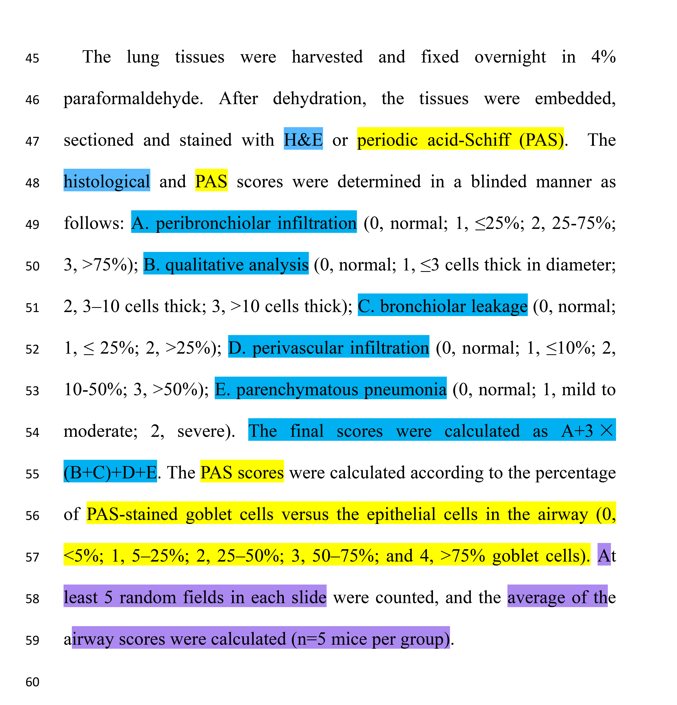

45 HE/PAS分析
客观的H&E或PAS切片图像自动分析
1. H&E或PAS切片图像人工主观评分的问题
拿到H&E或PAS切片的高清扫描图片后，需要对其进行评分，以分析不同组别或不同处理之间的差异。
通过文献检索，可能会找到类似下面的H&E和PAS切片图像的人工评分方法 (1)。

但是，可能会觉得：
人工评分太主观，太随意了（比如区域选择）~
人工评分因人而异~
人工评分耗时长（片子比较多），担心前后标准不一致~
总之，担心不能真实反应组间差异。
还有，从2025年6月1日起，多个Nature系列期刊（即《Nature Communications》、《Nature Cell Biology》、《Nature Methods》、和《Nature Structural & Molecular Biology》）(2)：
鼓励作者将其显微镜数据集存储在公共数据仓库中，正如基因组学和蛋白质组学等其它领域要求的那样 (2)。
可以想象，在以后的某个时间点，图片相关数据也可能被杂志强制要求共享到公共数据库，以供感兴趣的人员重复和使用。
2. 客观的分析
客观的H&E切片图像自动分析服务。
客观的PAS切片图像自动分析服务。
客观的切片分析，能够避免人为主观分析的各种缺点，比如(1)相对随意的切片区域选择；(2)不同分析人员之间的标准差异；(3)同一分析人员不同时间的标准差异等，因此可以保证结果的可重复性。
2.1 客观的H&E切片图像自动分析流程
2.1.1 理论基础
各种原因导致的炎症都伴随白细胞的浸润 (3)，或直观理解为病灶部位细胞增多，其通常通过H&E切片染色进行鉴别 (4)。
本流程通过计数H&E切片中的相对细胞（核）总数和相对细胞核总面积，以实现客观的H&E切片自动分析。
2.1.2 流程和实例

说明：示例所用组织切片使用3DHISTECH公司出品的Pannoramic 250 FLASH数字病理切片扫描仪进行扫描，采用20×明场物镜，获得全幅高分辨率数字图像，并保存为.mrxs格式以供分析。本示例切片的.mrxs格式文件大小约600 M。
2.2 客观的PAS切片图像自动分析流程
2.2.1 理论基础
PAS染色主要用于染色含有高比例碳水化合物（包括糖原）的结构 (5)，比如用于小鼠肺哮喘模型的粘液分泌鉴别 (6)。
本流程通过计数PAS切片中的相对PAS阳性颗粒总数和相对PAS阳性颗粒总面积，以实现客观的PAS切片自动分析。
2.2.2 流程和实例

说明：示例所用组织切片使用3DHISTECH公司出品的Pannoramic 250 FLASH数字病理切片扫描仪进行扫描，采用20×明场物镜，获得全幅高分辨率数字图像，并保存为.mrxs格式以供分析。本示例切片的.mrxs格式文件大小约600 M。